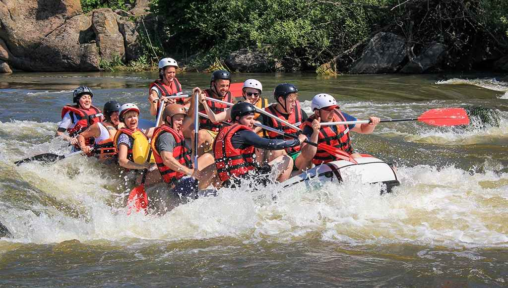
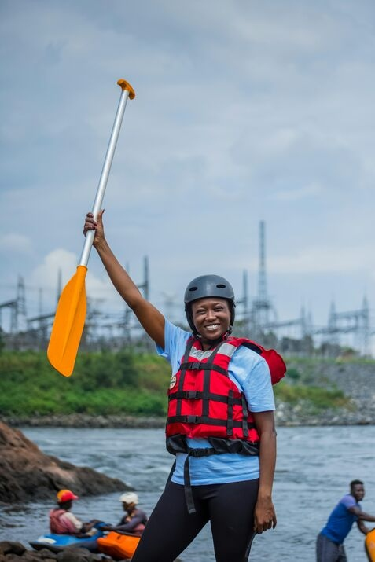

White water rafting is an outdoor recreational activity which uses an inflatable raft to navigate a river or other body of water. This is often done on whitewater or different degrees of rough water.


WHITE WATER RAFTING
HISTORY
Rafting as a sport began in 1811 when the first recorded attempt to navigate Wyoming's Snake River was planned by John Colter, who was part of Lewis and Clark's expedition.